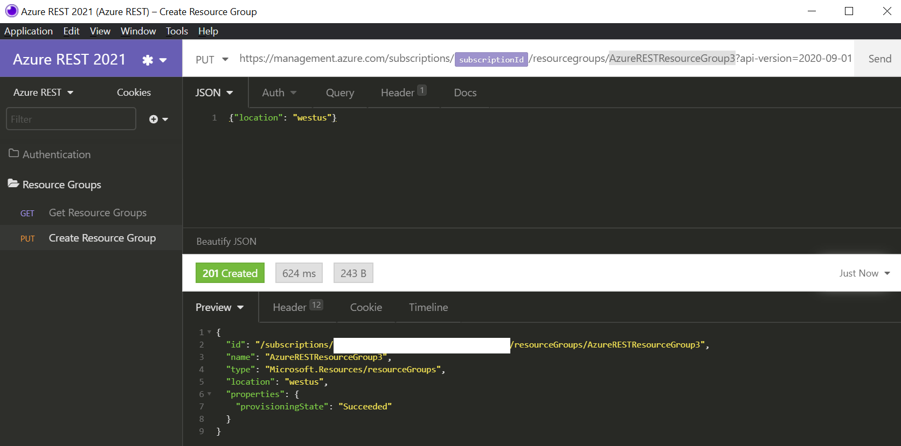

Here’s how to call the Azure REST APIs with Insomnia - a modern lightweight REST API client.
Azure SDKs
Before we go too far into this Azure REST APIs for Insomnia post, I want to make sure that you know you don’t need to use the Azure REST APIs to interact with Azure resources. So many people have reached out to me over the years asking for Azure REST help who didn’t know we have SDKs in many languages, including .NET, Python, Java, JavaScript/TypeScript, Go, C++, C, Android, iOS, PHP, and Ruby - and that they work across operating systems - and are available in their favorite package managers. In my opinion, if you don’t mind taking on the dependency of the Microsoft supported library, then it sure beats building the libraries yourself. Also, the new Azure SDKs include features like logging, retries, and are fully supported by a sizable team at Microsoft.
I understand if you want to use the REST APIs directly, but I just want you to know that the libraries exist as well.
You can find the libraries here: https://azure.com/sdk and a 3 min “Introducing the Azure SDKs” video here: https://aka.ms/azsdk/intro and all the source for the libraries can be found here: https://github.com/azure/azure-sdk
Alright, so you are sure you want to use the Azure REST APIs instead of the SDKs? Here’s how to do so with Insomnia.
1. Install Insomnia Core
Download and install Insomnia Core.
2. Install Insomnia - Default Headers Plugin
We are going to send the “Authorization” header Bearer token with each request and need the Default Headers Plugin to do so. You can find the plugin here on npm: Insomnia Default Headers.
There are other ways to auth with Insomnia, including the built-in OAuth2 provider, but I found this Default Header method better because I don’t need to manually set the authentication header with each request. Insomnia has a feature request to add authentication header at the workspace or folder level, but until then this is the best option IMO.
- Open Insomnia
- Go to Application -> Preferences -> Plugins
- Type
insomnia-plugin-default-headersand click “Install Plugin” - Close Preferences dialog.
3. Import the “Azure REST APIs with Insomnia Workspace”
- Open Insomnia
- Go to Application -> Preferences -> Data -> Import Data -> From URL
- Page the Workspace URL:
Enter https://aka.ms/azure-rest-apis-with-insomnia-workspace if that doesn’t work for some reason, then use this full URL: https://gist.githubusercontent.com/jongio/b13944eafa9a08b907e924010c2e47cd/raw/4d1a6bdbb8006a7cc8718ba70b42fba1b10bef04/azure-rest-apis-with-insomnia-workspace.json
- Click “Fetch and Import”
4. Setup Azure CLI
The Azure CLI is a command line tool that allows you to manage and interact with Azure resources, including the ability to get the necessary accounts and tokens required to call the Azure REST APIs. We’ll use it to create a service principal, which will be used to get the tokens we need to make Azure REST API requests.
Installation
You can either use the Azure Cloud Shell or install the Azure CLI locally.
Cloud Shell
The Azure Cloud shell is an in-browser terminal interface that allows you to execute Azure CLI commands without installing the Azure CLI locally.
Azure CLI Local Install
- Install the Azure CLI
- Login with
az login - Select your active Azure subscription with
az account set -n {name of your sub}
5. Authentication
Azure REST API authentication is done via a Bearer token in the Authentication header. We’ll use a service principal to get that token for us. A service principal is an Azure account that allows you to perform actions on Azure resources. Think about it like a system account that you can assign roles to and get tokens with. You can optionally read all about Service Principals here: Applications and service principals. Note that there are other ways to authenticate with the Azure REST APIs, but in this post we will only cover the Bearer token and service principal approach. You can research all the various ways to authenticate with the Azure REST APIs here: Azure REST API Authentication.
We first need to create the service principal with the following Azure CLI command:
az ad sp create-for-rbac
This will output the information you need to setup Insomnia - you will need it later, so save it to a safe location.

{
"appId": "798256c4-bbdc-4f7a-a20a-",
"displayName": "azure-cli-2021-02-10-22-47-08",
"name": "http://azure-cli-2021-02-10-22-47-08",
"password": "",
"tenant": "72f988bf-86f1-41af-91ab-"
}
6. Update Insomnia Environment
- Hit CTRL+E on your keyboard to open the Azure REST Insomnia environment. This is where we’ll set the environment variables.
Ignore the error in this dialog. It is only showing that error because the tenantId value wasn’t populated when you opened it.
- Update the environment variables as follows:
| Variable Name | Default Value | Notes |
|---|---|---|
| clientId | This is the value of appId from the service principal creation output above. |
|
| clientSecret | This is the value of password from the service principal creation output above. |
|
| tenantId | This is the value of tenantId from the service principal creation output above. |
|
| subscriptionId | You can get this with this Azure CLI command az account show --query id -o tsv |
|
| resource | https://management.azure.com/ | The default value is for managing Azure resources. |
| tokenUrl | https://login.microsoftonline.com/{{tenantId}}/oauth2/token | You do not need to modify this value, but can if you want to use a different token url. |
| DEFAULT_HEADERS | Do not modify this value. |
Execute “Get Resource Groups” Request
Now that we have auth setup, let’s execute our first GET request.
If this doesn’t work on first try, then try again in a minute or so. I think it needs time to get the token, but the error message just says the Authorization header is missing.
- Within the Insomnia workspace, find the “Resource Groups -> Get Resource Groups” request.
- Click the “Send” button.
- You will see your Resource Groups in the response pane.
Execute “Create Resource Group” Request
Now let’s execute a PUT request to create a new Resource Group.
- Within the Insomnia workspace, find the “Resource Groups -> Create Resource Group” request.
- Modify the “Resource Group Name” in the URL.
- Notice that we set the request Body with the location with this JSON:
{"location": "westus"}
- Click the “Send” button.
- You will see your Resource Groups in the response pane.

Conclusion
From here you need to explore the Azure REST APIs and add the requests that you’d like to call.
That’s the easiest way to get going with Azure REST APIs and Insomnia. Hope this helps you out.
Jon